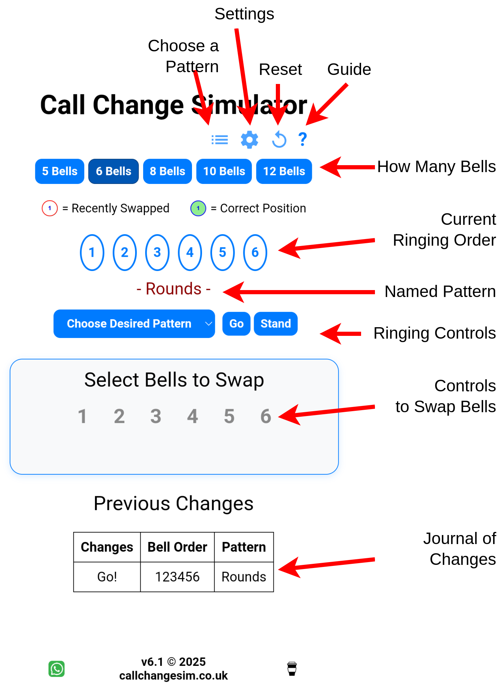

A Guide to the Page Layout#

- How Many Bells - Self Explanatory
- Current Ringing Order - The order the bells are currently ringing. These aren't touch sensitive, use the controls below.
- Named Pattern - This appears if the order of bells ringing corresponds to a named pattern
- Ringing Controls
- Change Desired Pattern - Select a pattern that make the ringing order above go green when achieved
- Go - Start the ringin'
- Stand - Stop the ringing at the end of a change
- Controls to Swap Bells - Select two bells to swap: the first selected bell shows in blue until the second is pressed
- Journal of Changes - A list, with the newest first, of changes you've made.
And Along the Top#
- Choose a Pattern - Provides the same functions as Change Desired pattern above, via an alternative interface
- Settings - See Settings
- Reset - Clears everything back to rounds for your selected number of bells
- Guide - Opens a handy quick reference guide